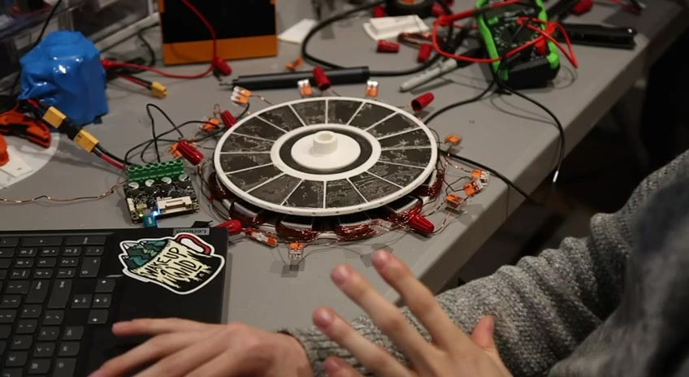

Projects

Motion-Tracked Third Arm
A 5-axis robotic arm worn on a backpack that copies my arm in real time. Demoed live at the UTK Engineering Expo.
May 2026 – nowLED Tissue Sealing Device
A handheld, disposable LED device that activates Rose Bengal dye to seal tissue without sutures. I'm designing its optical and electrical system.
Aug 2026 – May 2027
Axial Flux Motor
A pancake-shaped permanent magnet motor designed for a high power-to-weight ratio.
2026
Resumé Arm
A robotic arm and paper dispenser that hands out my resume, built on a $600 self-funded budget.
Oct 2025 – Feb 2026
Electric Bike Conversions
Mountain and road bikes converted to electric power, with custom battery packs, on a $250 budget.
Oct 2024 – May 2025Experience
-
Engineer Officer, Junior COSTEP
U.S. Public Health Service – Indian Health Service, Portland, OR · June – Aug 2025
- Worked on the Portland Area's largest design-build contract for medical facilities, including a school-based health center.
- Reviewed mechanical, civil, electrical and biomedical systems, made cost estimates, and monitored active construction projects.
- Inspected water treatment systems on Indian reservations, including pumps, storage tanks and treatment systems, and worked on mock water treatment designs.
- Performed environmental audits for the EPA at reservation sites.
- Presented my summer work at the national Junior COSTEP symposium.
-
Quality Engineer Intern
Kelvion, Knoxville, TN · May – Aug 2024
- Worked as a quality tech inspecting heat exchanger manufacturing, and shadowed engineers.
- Helped with reading engineering drawings and tracking supply problems.
-
Research Assistant
Karolinska Institute Biomedicum, Stockholm · Jan – May 2024
- Stained human brain tissue from the hippocampus, cortex, basal ganglia and cerebellum to find where the protein NEUROD6 is expressed.
- Co-stained for neurons, astrocytes and microglia, and measured overlap between fluorescence channels to see which cell types carried it.
- Found the protein mostly in neurons, with the densest signal in the cortex and hippocampus.
-
Drone Pilot
University of Tennessee NIMBioS Lab, Knoxville · June 2023 – May 2025
- Piloted a Mavic 2 Enterprise drone to record thermal and visual imagery for a spatial analysis lab.
- Registered the aircraft and completed airworthiness checks before each flight.
Education
University of Tennessee, Knoxville
- B.S. Biomedical Engineering
- Minor in Neuroscience
- Expected May 2027
DIS Study Abroad, Stockholm
- Neuroscience program
- Research placement at Karolinska Institute
- Spring 2024
Roane State Community College
- Associate of Science, General Studies
- Oak Ridge, TN
- May 2020
Toolbox
Lab
- Immunofluorescence & IHC
- Antigen retrieval, TSA staining
- Human tissue handling
- Fluorescence slide scanning
- Image thresholding & overlap analysis
Hardware
- Teensy & Arduino firmware
- CAN bus
- Brushless FOC motor control
- IMU sensors
- Battery pack building
- LED driver design
Design
- Fusion 360
- Blender
- 3D printing
- Mechanical prototyping
Other
- AI-assisted development
- Adobe Suite, DaVinci Resolve
- Construction cost estimating
- Technical writing
- Oral & poster presentation
Presentations
- Wearable Robotic Third ArmLive demonstration, UTK Engineering Expo, Knoxville · Sept 2026
- Summer engineering work with the IHS Portland AreaOral presentation, Junior COSTEP Symposium (national) · Aug 2025
- Neurod6 Protein AnalysisResearch poster, Karolinska Institute Biomedicum, Stockholm · May 2024
Certifications
- FAA Part 107 Remote Pilot Certificate
- U.S. Public Health Service Commissioned CorpsCommissioned officer (Ensign, O-1), called to active duty June 2025
- HIPAA training